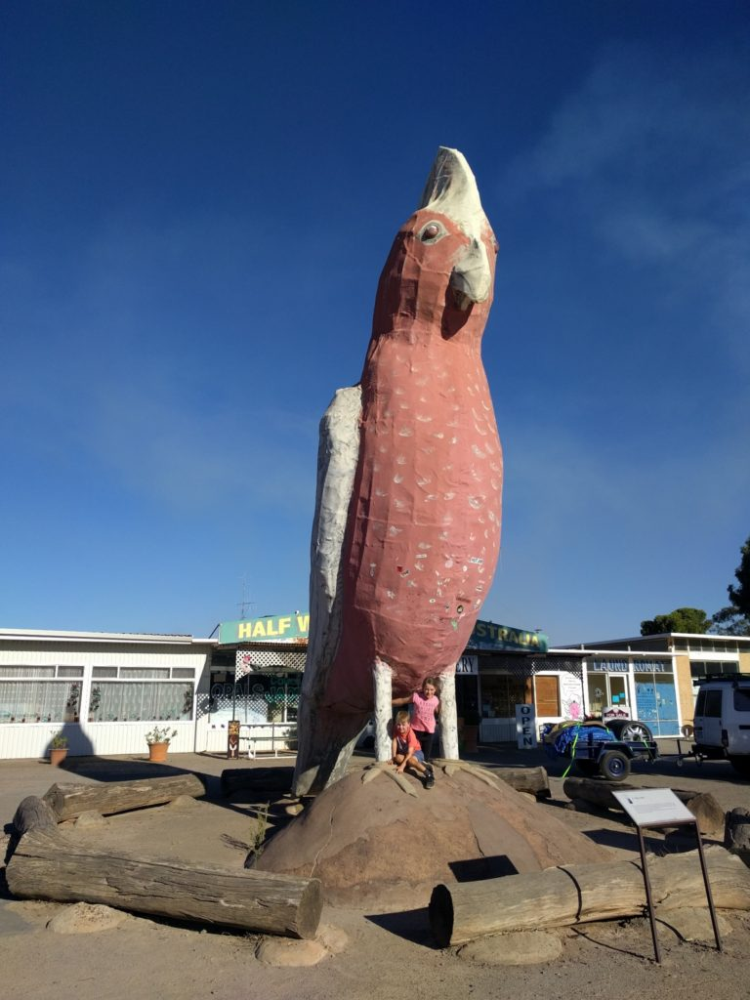

We left Ceduna early, on our way across the top of the Eyre Peninsula towards Port Augusta. It became quickly apparent that central SA looks a lot like the WA wheatbelt region – fields and paddocks for hundreds of kilometres. Though not a stretch containing any of our must-do items, we nonetheless found some nice surprises in the small rural towns along the way.
Outside a town called Minnipa, we drove a loop around a couple of natural land marks.
The first was called Pildappa Rock, a giant granite outcrop that looked not unlike Wave Rock in WA. This was shallow enough in places to walk up, so we all did. The top is a crazy surface of gullies and pits.
The second place we looked around is called Tcharkuldu Hill, as messy a collection of giant granite boulders as you’ve ever seen. Someone with a pair of rock climbing shoes and a bouldering pad could have had a lot of fun there.
Finally we moved on. Picking a place at semi-random based on distance via WikiCamps, we settled on a town called Kimba. This has the distinction of being hallway across Australia. Apparently.
There, we found (I kid you not) our first “big” thing: the Big Galah.

Kimba hosts a nice, free campsite in town near the sporting oval. There, we set up and Fiona made tacos. We met a nice couple who had been on the road travelling since the mid-90s.
I’m enjoying this, but I can’t see us doing it for the next two decades.